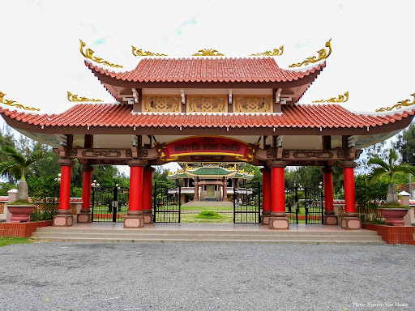

Lăng mộ Nguyễn Đình Chiểu – Tìm hiểu về di tích lịch sử và văn hóa
Tuy không phải là điểm đến quá nổi bật so với những danh lam khác, nhưng khu di tích lăng mộ Nguyễn Đình Chiểu lại thu hút du khách về sự chân thật của lịch sử và văn hóa qua thời gian. Đây chắc chắn sẽ là điểm dừng chân lý tưởng dành cho du khách.
Mục lục
1. Giới thiệu khái quát về khu di tích lăng mộ Nguyễn Đình Chiểu
1.1 Khu di tích lăng mộ Nguyễn Đình Chiểu tọa lạc tại vị trí nào?
Nơi đặt chân của bạn là khu di tích lăng mộ Nguyễn Đình Chiểu – nơi tôn vinh nhà thơ anh hùng, bác sĩ uy tín, và giáo viên gương mẫu. Đây không chỉ là một điểm đến lịch sử, mà còn là địa điểm thu hút những người đam mê du lịch tâm linh.
Mỗi năm, lăng mộ này thu hút hàng ngàn lượt khách đến để tưởng nhớ và tôn kính, tạo nên một không khí thiêng liêng. Địa chỉ chính xác của nó là Xã An Đức, huyện Ba Tri, tỉnh Bến Tre. Đây không chỉ là niềm tự hào của cộng đồng địa phương mà còn là điểm đến lý tưởng cho những người muốn khám phá văn hóa và lịch sử đặc sắc của Bến Tre.
1.2 Tìm hiểu về cấu trúc của khu di tích lăng mộ Nguyễn Đình Chiểu?
Khu di tích lăng mộ Nguyễn Đình Chiểu đặc trưng bởi quy mô ấn tượng của nó, chiếm diện tích rộng lớn lên đến 1,5 hecta. Bắt đầu từ năm 1972, quá trình xây dựng của khu lăng mộ đã chính thức khởi công và qua những năm tháng, nhờ các công đoạn trùng tu liên tục, nơi này ngày càng trở nên bề thế và hùng vĩ đến cuối thế kỷ XX.
Kết cấu của công trình bao gồm nhiều phần quan trọng như cổng tam quan, đền thờ mới, đền thờ cũ, nhà bia và khu mộ. Điều này tạo nên một không gian kiến trúc đa dạng và phong cách, đồng thời làm nổi bật sự lớn lao và trang trọng của khu di tích này.

2. Ngắm nhìn vẻ đẹp đậm sắc màu dân tộc tại khu di tích
2.1 Tìm hiểu về nét kiến trúc tại khu di tích lăng mộ Nguyễn Đình Chiểu
Lăng mộ Nguyễn Đình Chiểu, một phần quan trọng của Khu di tích Đồng Khởi Bến Tre, không chỉ là một điểm đặc sắc trong vùng nổi tiếng với cây dừa mà còn là một điểm đến lịch sử và văn hóa không thể bỏ qua. Trước khi bước chân vào không gian trang nghiêm của nghĩa trang lăng mộ, sự ấn tượng đầu tiên của bạn sẽ là cổng tam quan với phong cách truyền thống, mang đến không khí hoài cổ và tôn nghiêm.
Cổng tam quan được xây dựng với hình dáng quen thuộc của 2 mái chồng, ngói lợp âm dương màu đỏ gạch, tạo nên một bức tranh đẹp và ấn tượng. Cột trụ mạnh mẽ, sơn màu đỏ son nổi bật, tạo nên một hình ảnh trang trí đẹp mắt. Nhà bia, là điểm nhấn mới của khu di tích, được thêm vào để làm phong phú hệ thống kiến trúc nơi đây. Mặc dù mới được xây dựng, nhà bia vẫn giữ nguyên kiến trúc truyền thống, với chiều cao khoảng 12m và tường ngoại trang trí nghệ thuật độc đáo.
Bức tượng bia bằng đá, có kích thước ấn tượng, không chỉ là điểm nhấn lớn mà bạn không thể bỏ qua khi đến đây mà còn chứa đựng bài văn ca ngợi đầy ý nghĩa về công đức của Nguyễn Đình Chiểu và tiểu sử của ông.
Đặc biệt, đây cũng là những tháng mà các loại trái cây bước vào mùa thu hoạch nên nếu đến vào thời điểm này các bạn sẽ được thưởng thức các loại trái cây thơm ngon.
Đền thờ mới, được xây dựng từ năm 2000 đến 2002, theo phong cách kiến trúc trùng thiềm điệp ốc, là một tác phẩm nghệ thuật ấn tượng với chiều cao lên đến 21m. Đền này vừa tạo nên sự vững chãi với cấu trúc bằng bê tông cốt thép, vừa thể hiện sự tinh tế và tao nhã qua những điểm nhấn truyền thống như ngói âm dương và hoa văn trang trí trên tường.
Đền thờ mới không chỉ là nơi trưng bày hình ảnh các vị lãnh đạo mà còn là không gian linh thiêng để thắp hương, cúng bái. Tầng trên của đền có bức tượng chân dung của Nhà thơ, đúc bằng đồng, kèm theo những câu thơ và lời ca tụng ông từ lời nhân dân. Điều này tạo nên một không gian không chỉ là nơi tôn kính mà còn là nơi để khám phá và hiểu rõ hơn về di sản văn hóa của Bến Tre.
2.2 Niềm tự hào của người dân xứ dừa về khu di tích lăng mộ Nguyễn Đình Chiểu
Mặc dù đã trải qua quá trình xây mới, tuy nhiên, chúng ta không thể bỏ qua khu đền thờ cũ, một công trình được khởi công từ năm 1972 với kiến trúc đồng đều với cổng tam quan và diện tích tổng cộng lên đến gần 84m2. Nét đặc trưng của đền thờ này không chỉ là nóc được trang trí chi tiết và hoa văn rồng, mây cách điệu, mà còn là bàn thờ uy nghiêm nơi mà người ta đến để chiêm bái. Hai cột chính đều đắp nổi những câu thơ tương tự như ở đền mới, tạo nên một không gian tâm linh và truyền thống.
hông chỉ đơn thuần là những công trình riêng lẻ, mỗi công trình trong khu lăng mộ Nguyễn Đình Chiểu đều hòa mình vào một không gian xanh tươi, với các khoảng sân vườn thoáng đãng được bao quanh bởi đủ loại cây cảnh. Điều này tạo nên không khí yên bình và tĩnh lặng, làm cho những ai đến thăm viếng cảm thấy thư thái.
Ngoài ra, khu vực này còn trưng bày những tư liệu quý về thủ lĩnh nghĩa quân và hình ảnh của các phong trào chống Pháp của nhân dân Nam Kỳ cuối thế kỷ XIX. Đây là một điểm đặc biệt quan trọng để hiểu rõ hơn về lịch sử và văn hóa của địa phương.
Năm 1990, Khu di tích lăng mộ Nguyễn Đình Chiểu đã nhận được sự công nhận của nhà nước khi được xếp hạng là khu Di tích lịch sử văn hóa cấp quốc gia. Thành tích này tiếp tục được đánh giá cao khi Bộ VH-TT&DL cấp Bằng công nhận khu Di tích văn hóa, lịch sử cấp Quốc gia đặc biệt vào năm 2017, làm tôn vinh giá trị lâu dài và ý nghĩa của Khu di tích này trong bức tranh lịch sử đất Bến Tre.
3. Hòa mình vào không khí lễ hội được tổ chức tại khu di tích lăng mộ Nguyễn Đình Chiểu
Nguyễn Đình Chiểu, mặc dù không phải là con cháu của Bến Tre, nhưng ông đã dành phần lớn cuộc đời của mình để đóng góp cho lao động nghệ thuật tại địa phương này. Nhà thơ này đã tạo ra một ảnh hưởng mạnh mẽ, xây dựng nên tình yêu thương và lòng kính trọng từ phía cộng đồng. Do đó, ngày 1/7 mỗi năm, ngày sinh của ông, đã trở thành một lễ hội truyền thống văn hóa quan trọng đối với người dân Bến Tre, để tưởng nhớ nhà thơ nổi tiếng của vùng đất Nam Bộ này.
Lễ hội này mang đến nhiều hoạt động thú vị như lễ dâng hương, thi hóa trang, trích đoạn cải lương của Lục Vân Tiên – Kiều Nguyệt Nga, nói thơ Vân Tiên, đọc văn tế, thi mâm xôi ngày hội, mâm cơm ngày giỗ và nhiều trò chơi truyền thống khác như kéo co, đập niêu, nhảy bao bố,… Đây cũng là dịp tuyệt vời để làm mới và tái hiện truyền thống yêu nước cho thế hệ trẻ.
Lễ hội không chỉ là cơ hội để kỷ niệm và tôn vinh nhà thơ, mà còn là dịp tuyệt vời để khám phá văn hóa độc đáo và bày tỏ lòng biết ơn sâu sắc đến các bậc tiền nhân. Tham gia lễ hội, bạn sẽ có cơ hội nghe kể lại những câu chuyện về cuộc đời và sự nghiệp của ông, đồng thời hiểu rõ hơn về tuyển tập các bài thơ của ông trong thời kỳ kháng chiến.
Một chuyến ghé thăm tại đây không chỉ là trải nghiệm văn hóa mà còn là sự hồi tưởng và hiểu biết về sự đóng góp lớn lao của bậc tiền nhân này trong quá trình xây dựng đất nước.
4. Giá vé và hướng dẫn đường đi đến khu di tích lăng mộ Nguyễn Đình Chiểu
Giá vé: Miễn phí.
Thời gian mở cửa: Từ 7:00 đến 17:00 các ngày trong tuần.
Vị trí: tọa lạc tại ấp Giồng Cục, xã An Đức, huyện Ba Tri, tỉnh Bến Tre. Từ thành phố Bến Tre, bạn di chuyển theo lộ trình từ đường 30 Tháng 4 – Đại Lộ Đồng Khởi – đường tỉnh 887 – Đường tỉnh 885 thì sẽ đến được khu di tích.
Ngoài ra, địa điểm Căn cứ khu ủy Sài Gòn Gia Định cũng nằm trên cùng tuyến đường đến Khu di tích Đồng Khởi Bến Tre. Bạn có thể dễ dàng ghé thăm cả hai địa điểm trong chuyến du lịch sinh thái văn hóa lịch sử Bến Tre của mình.